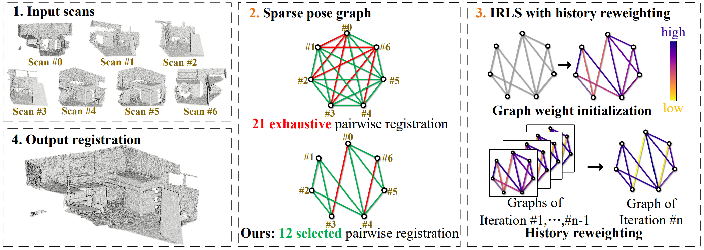

1Wuhan University
2The University of Hong Kong
3Sun Yat-sen University
4Tsinghua University
5Texas A&M University
*The first two authors contribute equally.
†Corresponding authors.
In this paper, we present a new method for the multiview registration of point cloud.Previous multiview registration methods rely on exhaustive pairwise registration to construct a densely-connected pose graph and apply Iteratively Reweighted Least Square (IRLS) on the pose graph to compute the scan poses. However, constructing a densely-connected graph is time-consuming and contains lots of outlier edges, which makes the subsequent IRLS struggle to find correct poses. To address the above problems, we first propose to use a neural network to estimate the overlap between scan pairs, which enables us to construct a sparse but reliable pose graph. Then, we design a novel history reweighting function in the IRLS scheme, which has strong robustness to outlier edges on the graph. In comparison with existing multiview registration methods, our method achieves $11$\% higher registration recall on the 3DMatch dataset and $\sim13$\% lower registration errors on the ScanNet dataset while reducing $\sim70$\% required pairwise registrations. Comprehensive ablation studies are conducted to demonstrate the effectiveness of our designs.

Fig.1 Pipeline of SGHR. Given $N$ unaligned partial scans (1), our target is to register all these scans into a completed point cloud (4). SGHR has two contributions. (2) We learn a global feature vector to initialize a sparse pose graph which contains much less outliers and reduces the required number of pairwise registrations. (3) We propose a novel IRLS scheme. In our IRLS scheme, we initialize weights from both global features and pairwise registrations. Then, we design a history reweighting function to iteratively refine poses, which improves the robustness to outliers.
}
Welcome to take a look at the homepage of our research group WHU-USI3DV ! We focus on 3D Computer Vision, particularly including 3D reconstruction, scene understanding, point cloud processing as well as their applications in intelligent transportation system, digital twin cities, urban sustainable development, and robotics.